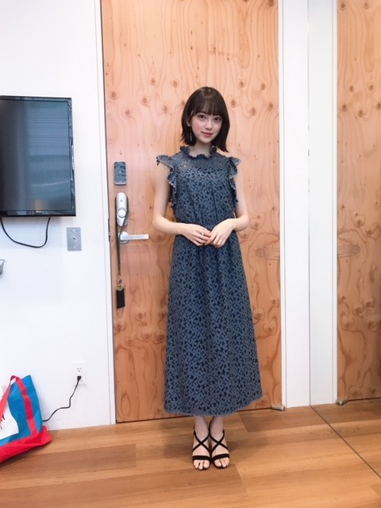
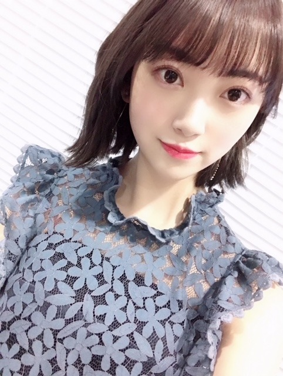
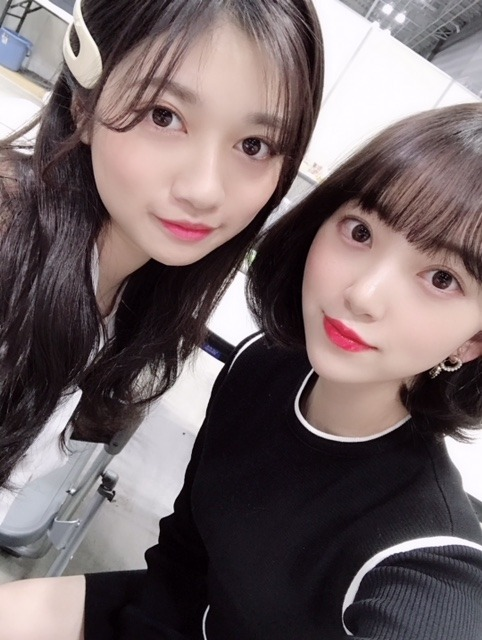

2019/0220Wed日本ブルーレイ大賞
日本ブルーレイ大賞の授賞式にアンバサダーとして出席させていただきました！✨
本番前は、ずっっと緊張しててメイクさんやマネージャーさんにあーどうしようーって話しかけてソワソワしてました。笑
衣装はブルーレイにちなんで鮮やかな青色のワンピースを用意していただきました☺︎
どうですか？

指輪も磁石タイプのイヤリングも可愛くて幸せでした。
大賞はグレイテスト・ショーマン、
私が選ばせていただいたアンバサダー特別賞はシェイプオブウォーターでした！
皆さんはブルーレイでもう観られましたか？？
ブルーレイだと、色も音も綺麗すぎてその映画の世界に飛び込んだ気分で観れますので断然おすすめです☺︎
グレイテスト・ショーマンは差別などの社会問題を描きながらもミュージカル映画ということで音楽やダンスを通して人々が前向きに生きていく姿が素敵なの！
主人公の男性を中心に成功と挫折を繰り返しながら夢や愛を求めていくヒューマン物語となっていて、辛いことがあったりうまくいかない日々が続いても、グレイテスト・ショーマンを観ると生きる希望が湧いてきます
監督の解説付き字幕が見応えたっぷりでした✨✨
おすすめ！
シェイプオブウォーターは声が出せなくなった女性と人間ではない生き物の純愛を描いたラブストーリーで、今までの概念にはない新たな愛の形が揺るぎない純愛で素敵だなぁと思いましたし、話のテンポも心地よくて、切なくとも美しい映画でした！
皆さんにも是非、色んな映画をブルーレイで観ていただけたらなと思います☺︎ステキな作品に出会えますように^ ^

そして舞台 漫画みたいにいかないを
絢音と観劇しにいきました！！
すっごく面白くて絢音とずっと笑いっぱなし^ ^
4月から始まるドラマも更に楽しみになりました✨
あ、ちなみに1話には私も出させていただきます...笑
ドキドキだー！ドキドッキドッキドキ
笑
あとね、たまたま絢音とその日のワンピース、上着、帽子、カバンがほとんど同じで双子コーデとやらになっていたのにも驚きました_φ(･_･

そうそう、ちょっと前に蘭世と絢音と夜ごはん食べに行ったんだけどたくさん食べて話して楽しかったな〜
焼肉を食べたんだけどね、2人を前にするとかわいい娘に見えて私がお肉を焼いてあげたくなってしまう衝動に駆られて何だかお母さん気分でした
って言いながらいつも2人につっこまれて1番子供なのは私なんだけどね...
とほほ...
明日からバースデーライブ4日間！
みんなで力を合わせて頑張ります！楽しみ✨
ちなみに私のサイリウムカラーはオレンジx白です！
顔をくっつけて寝るのが好き
ふさふさ。
では！


コメント(372)
いよいよ明日からバースデーライブですね！
全曲披露ということでとても楽しみです！
未央奈ちゃんも身体に気を付けつつ楽しんでね♪
バースデーの22日は現地に行けるから楽しみ！
付き合ってください
ブルーのワンピースも授賞式にふさわしい
素敵な衣装ですね。
グレイテスト・ショーマンとシェイプオブ
ウォーター、どちらも見たことないので
チェックしておきます
こうやって堀ちゃんがブログで作品を紹介
するだけでアンバサダーとしての役割を
果たせていますね
何だか淀川長治さんを彷彿とするような
感じで、また一つ乃木坂のお仕事とは少し
別な形で堀ちゃんが注目される機会ができて
良かったと思います。
いよいよバースデーライブですね。
堀ちゃんが言うように『みんなで力を合わせて頑張る』事、シンプルな言葉だけれど、この言葉が何より大切なワードではないかと思います。
自分は行けませんが、完全燃焼で頑張って下さいね。
プティちゃんの表情幸せそう。
「未央奈といる時が一番幸せだワーン」って言葉が表情から伝わってきます。素敵な写真ですね。
ブルーレイアンバサダーなのに所々DVDになっていたのが気になりました笑
楽しみです
明日からのバスラ頑張ってね(∩//´・ᴗ・`//∩)❤︎
1日目行くよ！！
未央奈ちゃんのタオル掲げてるからみつけてね！！
明日から2日間バスラ行きまーす！
似合ってるよ！
めっちゃ可愛いよ！
好き！
アンバサダーおめでとう！
ワンピース可愛い(//∇//)
おすすめ観てみるね♪
漫画みたいにいかない楽しみ(≧∇≦)
優しいね(*^^*)
子供っぽい未央奈ちゃん可愛くて大好きだよ♪
バースデーライブ頑張ってね！
写真可愛い(//∇//)
またね♪
未央奈ちゃん神推し
秀喜より！(≧▽≦)
ブルーレイ大賞お疲れ様でした
青いドレスって凄く似合うよ(*´ω｀*)
これからも頑張って(/･ω･)/
バスラ頑張って(/･ω･)/
ああ、あやねちゃんとの偶然な双子コーデの写真見たかったなあ(｡>﹏<｡)
明日テストの後バスラ！！最高(;_;)❤️❤️
全力で楽しむぞぉぉー！
おめでとう
可愛すぎやし、大好き♡
ブルーのドレスは、
とてもシックで良いと思います。
インタビュー映像は、単独記者会見みたいで、
グレード高い感じでしたね。
今この仕事は、未央奈さんに、取ってとてもタイムリーで、
打って付けだと思います。
映画ではないんですが、海外ドラマの、
ＭＲ．ＲＯＢＯＴ は、面白いです。お勧め。
ａｍａｚｏｎ の配信で観てます。
青色の花柄のワンピかわいいね！
どんどん大人っぽくなっていくね！
そうかぁ、お姉さんですもんね。
大好き！
明日からバースデーライブ頑張ってね！
私も残り4日の夜勤をまっとうします！
青色のワンピ姿 可愛いよ～！
そうそう 美味しいものしっかり食べてね！
体力を付けて頑張ってね！
話が纏まらないや？
体調に気を付けてね
んじゃね～～～！！！
二作品とも映画館で観たよ。
二作品とも素晴らしい映画だったのでブルーレイまだ持ってないので買うね。また、レコメン収録だけどきくね。
自分は24日のビューイングのみ見ます。
そういえば、ブルーレイのやつ朝テレビでやってました。可愛かったです。
お疲れ様でした！
未央奈がめっちゃ可愛い、
もちろんらんらんにも。
何時も頑張りや
めっちゃ好きやで
みおなの二期生愛がほんとに素晴らしい〜*·˚ ༘♡
ブログ更新ありがとう！
そして、日本ブルーレイ大賞お疲れ様でした！
グレイテスト・ショーマンもシェイプオブウォーターもとても素敵な作品ですね。"好きなこと"がお仕事に繋がっていくことほど嬉しいことはないですよね。
漫画みたいにいかないも楽しみにしてますね！
焼肉羨ましいな〜
いよいよ、明日からはバースデーライブですね。四日間、曲数もこれまで以上に増えて、かなりハードだとは思いますが、楽しみながら、怪我に気をつけてくださいね。
無事に成功することを願っています。
そして、なーちゃん、みさ先輩との時間も大切にね。
どこかで、思い出話なんかも聞けたら嬉しいなぁ〜
では、またの更新
待ってます。
ブルーレイ大賞おつかれさまです！
グレイテスト・ショーマンは映画館で見たけどシェイプオブウォーターはまだ見てないのでチェックします！
ドレス可愛い〜
映画も(*^^*)
未央奈可愛い
バスラ頑張って
ブルーの衣装似合ってるよ～
私もTV番組の保存用にもっぱらBlu-rayを使っています。市販の映像ソフトもなるべくBlu-rayを買うようにしています。DVDに比べればちょっと高いですが、やっぱハイビジョンで見ないと。あと最近4k、8k放送が始まりましたが、4k・8kを録画できるメディアの登場が待っています。早く規格化して欲しいです。
ではまた。
ブログにモバメ、ありがとね❗️(笑)
ブルーレイ大賞のアンバサダー、おつかれさま❗️(笑)
青いドレス、良かったよ・・・
なんかふとさ、何年か前にドイツ村に行って、ロケしたときの衣装も思い出しちゃったよ❗️(笑)
あのときもブルー、少し薄めな色だったけど、みおな、意外とブルーも似合うのね❗️(笑)って❗️(笑)
あの衣装は、確か、２年前の５月、パシフィコ横浜で、あさひなぐメンバーだけの握手会の時に着てくれてたよね❗️
間近で見ても、とてもよく似合ってたし、髪型も俺の好きな髪型でとても嬉しかった・・・
みおなもスゴくかわいかったよ❗️❗️(笑)
前回のブログではお猿さん・・・
今回のブログでは、プティ・・・
モバメもお猿さん・・・
接してる時のみおなの表情、スゴく愛情深く感じるんだよね・・・
みおな、ほんと、優しい・・・
なになに❓️
お肉も焼いてあげるんだって❓️(笑)
タレをこぼしたりしたら、もう、なにやってるのよー❗️なんて言いながらも、一生懸命拭いてくれそうなイメージ・・・(笑)
そんなこと感じながら、明日からのバスラ、楽しみにしています❗️(笑)
僕はこれから少し寝て、夜、大阪に向かいます・・・
みおなも夜はしっかり休んでね❗️(笑)
5thの時のような体調ではないことを願っています・・・
それじゃ、またね❗️❗️(笑)
あ、ちなみに僕は、明日から３日間、京セラドーム・・・
４日目は、名古屋でライブビューイング・・・
よろしくね❗️❗️(笑)
堀未央奈ちゃんブログ更新ありがとう
ブルーレイアンバサダー就任おめでとう⁉︎
特別賞もチェックするね⁉︎
明日からバスラ
全曲発表の怒涛の4日間に
なるけど頑張ってね⁉︎
仕事で4日目のみだけど行くね〜⁉︎(^^)
ワンピースめっちゃかわいい！
明日からのバスラ頑張ってください！
応援しています！
日本ブルーレイ大賞授賞式お疲れ様でした！
少しいつもと違う雰囲気のお仕事、かつソロだとやはり緊張されるのですね〜
うん！授賞式という場にもマッチしていてとても良いと思います！^ ^
明度の低い色使い、イヤリングも細めの縦長、スタイルも細いから一見シャープさが強めになりそうなところですが、未央奈のお顔が可愛いのと、ワンピースの抜きで作られた柄が可愛い印象で、肩口や襟はふりふりしてて可愛いので、未央奈らしさも出ているし、授賞式を邪魔しない落ち着いた雰囲気も出ているし、凄く似合っていて綺麗です♬
シェイプオブウォーターは未央奈に教えて貰ったのでひさびさに映画館で見たさくひん！(ブルーレイじゃなくてごめんね！笑)
そうだよね。本当の愛があるならば、種族や言葉の壁なんて何の問題が無いのだと私も思える、そんな作品だったと思います！^ ^
ある意味、ただの一般市民な私が、日本一のトップアイドルグループメンバーである堀未央奈に愛情を持って接する事を肯定してもらっているかの様にも思っちゃいました。(*´ω｀*)笑
四月か〜。1話の未央奈、楽しみに待ってます♬ドキドッキドッキドキですね笑
あやねちゃんとの双子コーデ、もしかしたらあやねちゃんが知らず知らず未央奈を参考にしたりしながらファッションを決めたりしていたのかな？^ ^ だからおんなじコーデになったのだとしたら更に仲良し感感じるんだけどね〜(*´ω｀*)
んー。。
この3枚目の左の女の子…どなた？蘭世？？？目元だけ蘭世に見えるけど…んー？んーー？？
笑
ま、蘭世は社会的な連載もやっていたり、あやねちゃんは元々落ち着いた雰囲気を持っているから大人びて見えるところありますからね！^ ^
そんないつも可愛いところが未央奈の魅力の１つだとおもうよー！メイクと表情次第では一瞬で大人びた雰囲気にもなれるからね、未央奈は。
バスラ頑張って！
755でも話したけど、最後の写真、2人がよく似てるね^ ^ 可愛いです。癒されます♬
ふさふさ
ではでは！！
堀ちゃんオススメだから
映画観てみよっかなー？！
堀ちゃん映画の解説うまいよねっ
よっ！アンバサダー！！
バスラ楽しんできてねー！！！
裏話とか聞けたら嬉しいなー♪
日本ブルーレイ大賞すごいね！！
未央奈ちゃんも色んな人に知ってもらえて
嬉しいなぁ
したっけ〜〜
どさんこしゅーちゃん
全曲披露だから、無理せずに頑張って下さい！
ステージでも輝く未央奈が好きです！
ブルーレイ大賞受賞式お疲れ様＼(^o^)／
なかなか映画は見ないんだけど、何かきっかけがあるといいな♪
バスラ始まるね♪楽しみだよ(｀∀´)
コメントする